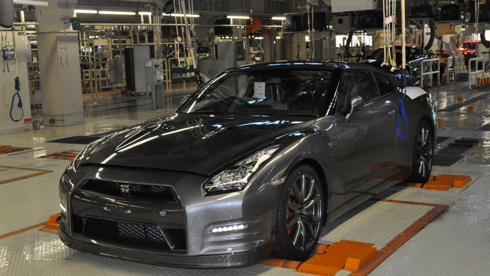
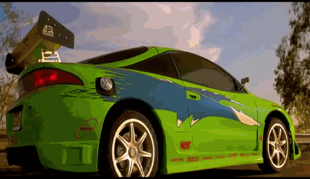

Термин JDM
Japanese Domestic Market (JDM) (англ. Японский отечественный рынок или Японский внутренний рынок) — термин, распространённый в отношении автомобилей (как и запчастей), продающихся на рынке Японии. Обычно модели автомобилей, предназначенных для Японии, отличаются от тех же моделей, предназначенных для других рынков, или же вовсе не поставляются на экспорт.
Основными производителями моделей автомобилей для JDM являются японские же компании: Toyota, Nissan, Honda, Mitsubishi, Mazda, Suzuki, Subaru, Isuzu, Daihatsu, Mitsuoka. Импорт на рынке JDM представлен незначительно, в основном моделями сегмента премиум и люкс, а также моделями японских фирм, выпускаемыми за рубежом.
Для моделей JDM характерно довольно богатое оснащение салона и высокие технические характеристики. Отличительной особенностью является практически обязательные АКПП и кондиционер. Машины строятся в соответствии с нормами левостороннего движения, то есть руль расположен справа, а фары светят налево и имеют сфокусированную картинку, что исторически совпадает с нормами Великобритании и Ирландии, так как именно оттуда в императорскую Японию попали первые автомобили. В Японии разрешены к эксплуатации импортируемые леворульные модели, обладание которыми, наоборот, поднимает статус владельца в связи с редкостью и, как правило, дороговизной таких автомобилей.
Характерной особенностью политики японских автопроизводителей является выпуск новых моделей и технологий сначала на внутреннем рынке, используя качественные материалы и сборку, а уже потом выпуск некоторых моделей на экспорт со значительной скудностью комплектаций и качества. Таким образом, часто встречается ситуация, когда японские покупатели получают возможность приобрести более качественные автомобили, имеющие более новые технологии или версию, чем автомобили, продающиеся японскими производителями в других странах. Многие модели вообще не попадают на экспорт в европейские страны, хотя в Японии считаются довольно популярными. Национальной спецификой JDM также является внешний вид автомобилей, характерный для японской школы автодизайна.
На этом сайте мы будем рассматривать в основном Японские машины старых поколений, так как именно они приходят на ум при упоминании JDM
